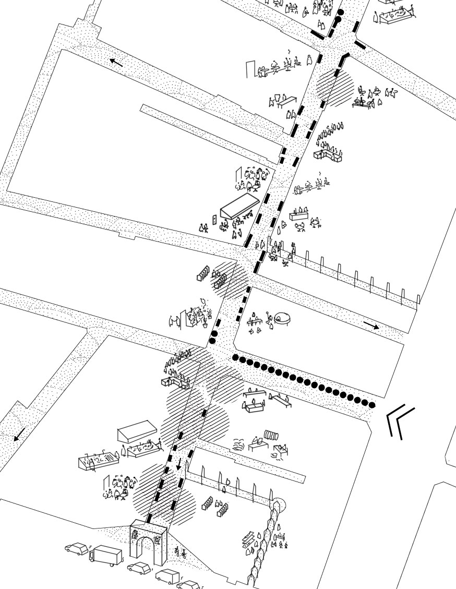
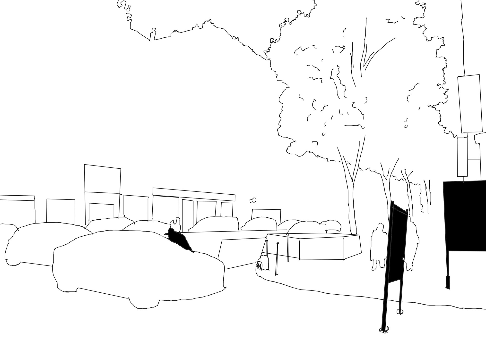
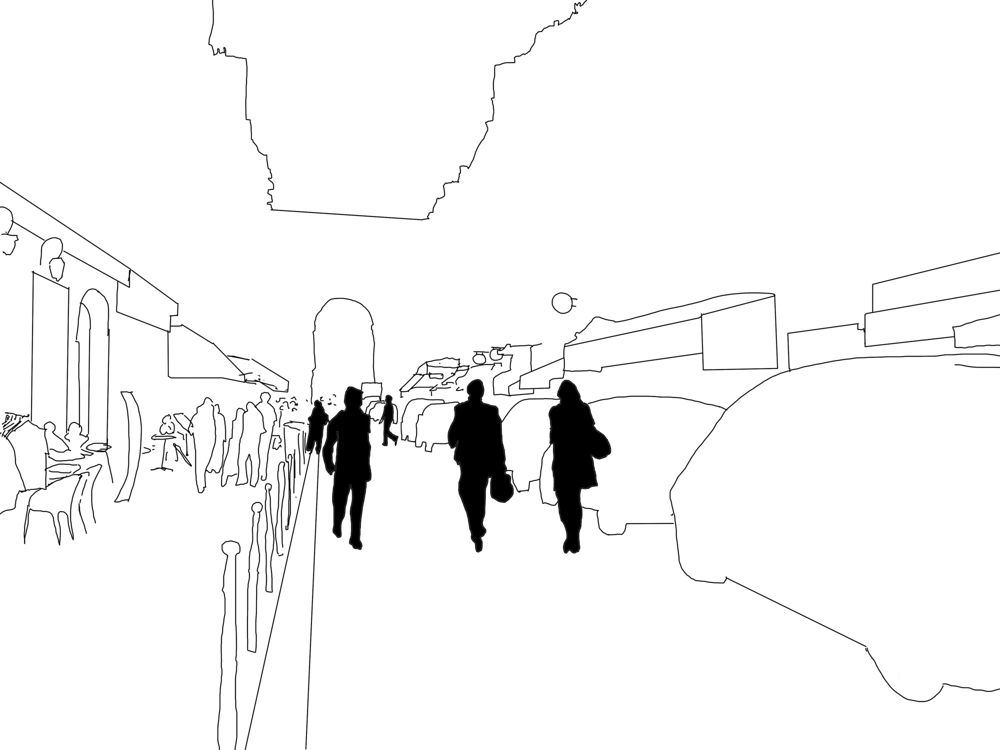

Kampen 25 : KRITIK journal #47

Sofielund industrial zone has for long been in the peripheries of the city of Malmö, Sweden, but is today becoming an important economic, cultural and social potential with its low price on land, the new train stations and the numerous densification projects close by. The looming urban regeneration of the area puts on edge the policies, the framing, of the urban production:

